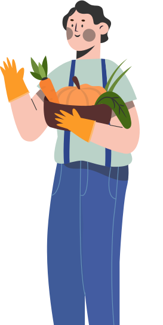

Магазин фермерских
продуктов с доставкой
Все продукты изготавливаются под заказ. Фермеры начинают готовить продукты за день до отправки заказа клиентам. Именно поэтому мы принимаем заказы заранее и доставляем продукты максимально свежими.

Почему фермерские продукты лучше?

Фермерские продукты
Еда намного вкуснее
Домашняя колбаса из мяса, соли и специй и колбаса из магазина —
два настолько разных продукта, что они даже не родственники

Магазинные продукты
Просроченные продукты
Из-за большого количество товара сотрудники магазинов не успевают
своевременно производить замену товара

Фермерские продукты
Натуральные продукты
Поставляем местные органические продукты выращенные без пестицидов
и химических удобрений.

Магазинные продукты
Некачественное мясо
Мясные полуфабрикаты, в которых содержится чрезмерно много натрия,
вредных жиров, консервантов